Roteador · quatro tarefas interativas
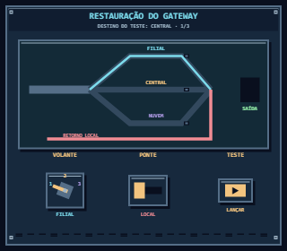
Restauração do gateway · inicial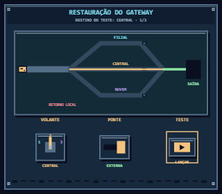
Restauração do gateway · em operação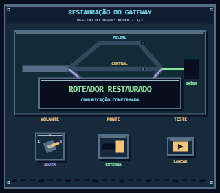
Restauração do gateway · concluído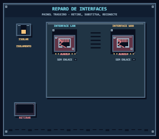
Reparo de interfaces · inicial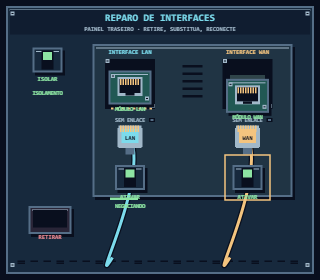
Reparo de interfaces · em operação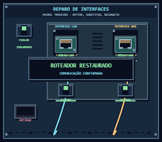
Reparo de interfaces · concluído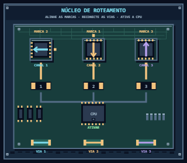
Núcleo de roteamento · inicial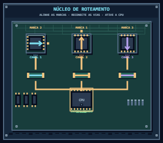
Núcleo de roteamento · em operação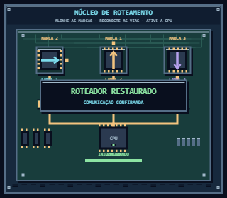
Núcleo de roteamento · concluído Reconstrução de rotas · inicial
Reconstrução de rotas · inicial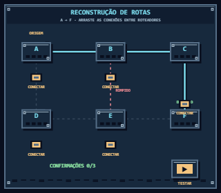
Reconstrução de rotas · em operação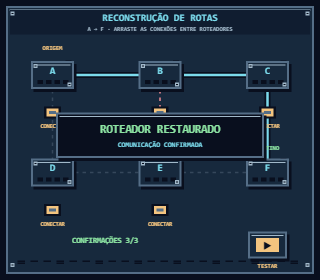
Reconstrução de rotas · concluído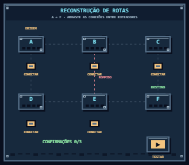
Reconstrução de rotas · inicial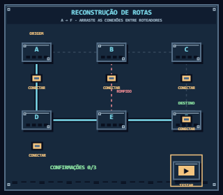
Reconstrução de rotas · em operação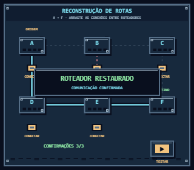
Reconstrução de rotas · concluído Reparo de interfaces · inicial
Reparo de interfaces · inicial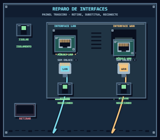
Reparo de interfaces · em operação Reparo de interfaces · concluído
Reparo de interfaces · concluído